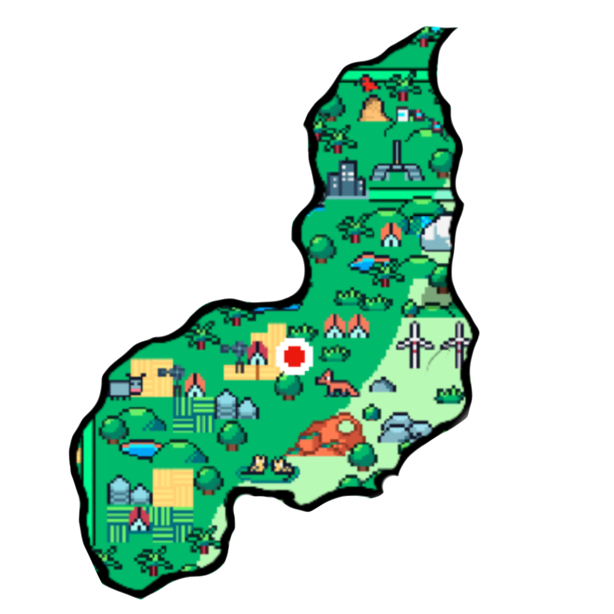

Delta do Rio Parnaíba No limite com o estado do Maranhão, está um dos principais pontos turísticos do Piauí: o Delta do Parnaíba. Essa é uma formação geográfica que só é encontrada no nordeste brasileiro, no Egito e no Vietnã. Existe um roteiro muito procurado que passa pela região, chamado Rota das Emoções, contemplando os estados do Piauí, Maranhão e Ceará. No Delta do Parnaíba, você tem a oportunidade de avistar e se banhar em um arquipélago com cinco diferentes saídas para o mar. Parque Ecológico da Cachoeira do Urubu Outro dos pontos turísticos do Piauí imperdíveis no seu roteiro de viagem é o Parque Ecológico da Cachoeira do Urubu. Esse é um verdadeiro paraíso de quedas d’água e formações rochosas. Uma dica é visitar o local entre os meses de janeiro até abril. É nesse momento que o volume das águas se mostra maior, além de permitir a observação da piracema. Parque Nacional de Sete Cidades O Parque Nacional das Sete Cidades fica localizado numa região que mescla os biomas do cerrado e da caatinga. Ele reúne sete grupos rochosos que são grandes monumentos esculpidos pela própria natureza. Muitos turistas se impressionam com as figuras humanas, de animais e símbolos que os ventos e as chuvas formaram. Além disso, há mirantes, lagoas para se refrescar e pontos com pinturas rupestres.

HISTÓRIA 
 História do Piauí Estudos arqueológicos indicam que o território do atual Estado do Piauí é habitado há muitos milhares de anos. No século 16, o Piauí era habitado por nações indígenas como os tremembés e tabajaras, entre outras. ... Os colonos envolveram-se em lutas contra grupos indígenas, pela disputa da terra.
PONTO TURISTICO 
CLIMA